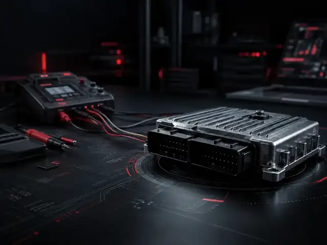

Recuperación Bosch EDC17CP54
Recuperación técnica para unidades bloqueadas, con flash corrupta, escritura fallida o ausencia de arranque tras una intervención de software.

01
QUÉ HACEMOS
Recuperación técnica
- Restauración de comunicación
- Recuperación de software
- Revisión de memorias
- Verificación en banco
02
CUÁNDO SOLICITARLO
Casos habituales
- ECU bloqueada
- Escritura interrumpida
- Software corrupto
- Vehículo sin arranque
03
QUÉ ENVIAR
Material necesario
- ECU afectada
- Datos del vehículo
- Descripción de la incidencia
- Archivo original si está disponible
TIEMPO HABITUAL24–72 h
TRABAJOEn laboratorio
COBERTURAGarantía técnica
CÓMO FUNCIONA
Proceso de trabajo
PASO 01
Configura el pedido
Indica vehículo, referencia y síntoma para revisar el trabajo.
PASO 02
Envía la ECU
Prepara la unidad para su entrada en el laboratorio.
PASO 03
Recuperamos y probamos
Se interviene la unidad y se verifica el resultado.
PASO 04
Devolución
Recibes la ECU preparada para continuar el trabajo.
FAQ
Preguntas frecuentes
¿Podéis recuperar una ECU que no comunica?
La viabilidad depende del daño y del estado de las memorias. Se revisa la referencia y el caso antes de procesar el trabajo.
¿Necesitáis el vehículo?
Muchos trabajos pueden realizarse sobre la ECU enviada. Si el caso requiere información o comprobaciones adicionales, se solicita antes de continuar.
¿Incluye garantía?
El trabajo realizado y validado queda cubierto según el servicio y el estado del material recibido.